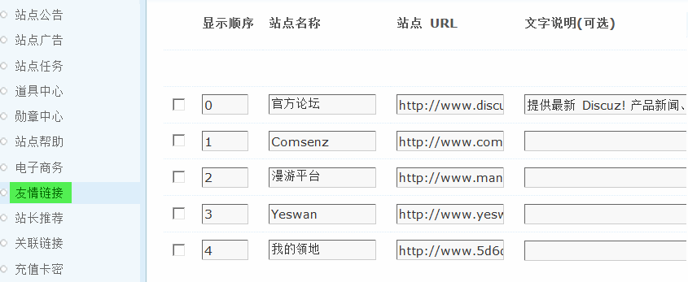
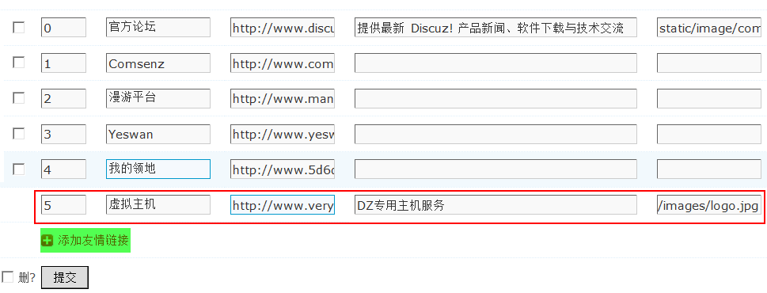
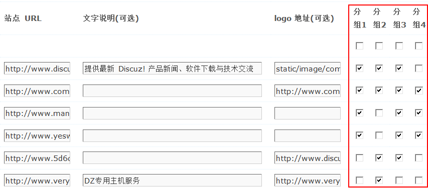
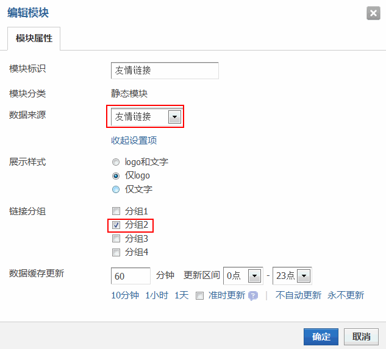
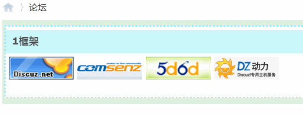

8.8. 友情链接¶
友情链接
友情链接是一种网站之间的简单合作形式，即分别在自己的网站上以文字、图片或其他形式的载体链接到对方的网站。
友情链接的意义主要有两方面：
1、通过和其他站点交换链接，可以吸引用户点击访问，直接提高您网站的访问量。
2、搜索引擎在决定一个网站的排名时，不仅对网页内容和结构进行分析，还围绕网站的链接展开。
友情链接有图文混合型、图片链接、文本链接三种展现形式。
操作路径：【后台】=>【运营】=>【友情链接】
一、添加友情链接
点击“添加友情链接”然后添加显示顺序、站点名称、站点 URL、文字说明（可选）和Logo地址（可选）。
【站点名称】、【站点URL】都是必填项目。其后【文字说明】和【logo地址】是可选的，未填写文字说明的项目将以紧凑型显示。
有前台的显示效果：

二、友情链接分组
友情链接不是只能显示在论坛首页的下方。有时候我们想给友情链接分组，比如第一组链接都是合作伙伴，第二组链接都是媒体，第三组链接都是交换链接。通过 DIY 我们可以把友情链接自由的展示在每一个可拖拽区域内，并且按组展示。
我们可以给每一条友情链接指定一个组。然后到前台论坛首页，点击页面右上角的“DIY”,进入diy高级模式，然后在页面上依次添加100%框架，在框架内添加“静态模块”，如下图所示：
设置该静态模块数据来源为 “友情链接” ，然后可以指定链接分组，默认有四个组，我们选择其中一个，确定。然后可以看到在模块中已经显示出指定的那一组友情链接图标了。
可以随时更改，显示不同组的友情链接。
三、管理友情链接
可以点击友情链接显示顺序前面的复选框，然后点击提交删除选择的友情链接。
如果您不想在论坛首页显示友情链接，可以在“界面设置”中关闭。操作路径：【后台】=>【界面】=>【界面设置】=>【论坛首页】显示友情链接，选择“否”。